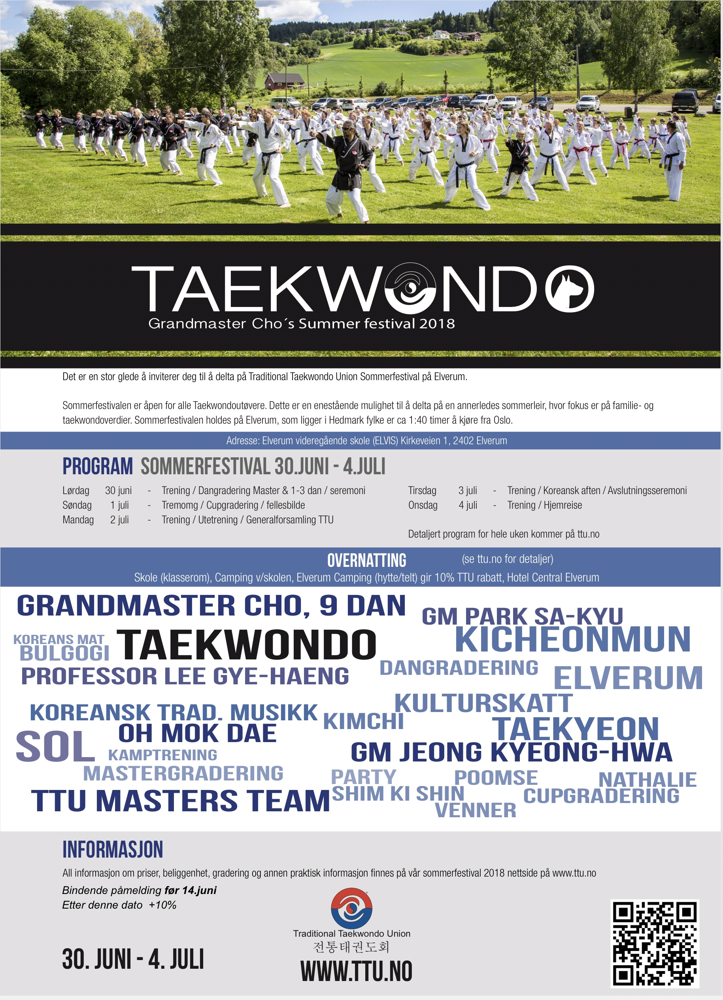

Arrangement
TTU Sommerfestival 2018

TTU inviterer til den tradisjonsrike sommerfestivalen. I år holdes den på Elverum videregående skole (ELVIS) fra lørdag 30.juni til onsdag 4. juli.
Invitasjonen med informasjon om leir, priser og påmelding finner du HER!
TTU informerer om at det er satt opp enda flere treninger i år, så man får trent ekstra mye! Ringerike TKD klubb håper mange har lyst til å bli med på sommerfestivalen. Nytt av er at årets påmelding gjøres av den enkelte. Vi ønsker likevel å registrere hvem og hvor mange som blir med fra klubben. Ta kontakt med oss hvis du ønsker å være med på årets Taekwondo-begivenhet.